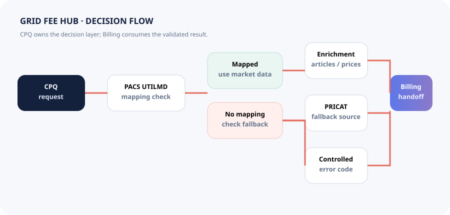

01 · Energy
Grid Fee Hub
CPQ-side decision flow across PACS, CPQ and Billing, including mapped data, controlled fallback and structured failures.
View full case study →Choose a project to see how I move from business problem to process model, requirements, system behavior, validation and outcome.

CPQ-side decision flow across PACS, CPQ and Billing, including mapped data, controlled fallback and structured failures.
View full case study →
Digitizing field operations and replacing paper activity logs with a searchable operational trail.
View full case study →
EDI, automation and KPI governance across international inventory, orders and supplier operations.
View full case study →
Recruitment planning, permissions, employee audits and location-aware attendance translated into traceable digital workflows.
Explore requirements evidence →